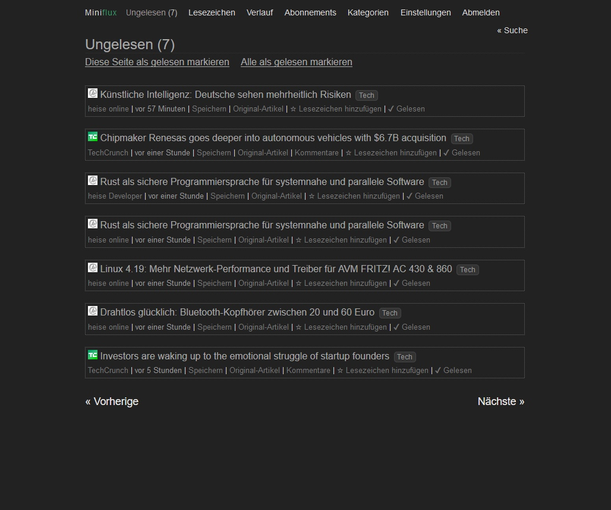

macOS X 上最佳 RSS 阅读体验
我一直是 RSS 的重度使用者，一路从 Google Reader 到 Inoreader 到现在一直都在持续使用，甚至在 Inoreader 上付费使用，直到 Inoreader 对订阅源数量做限制。像我这种只加 feed 不删 feed 的人怎么能忍得了。
这两天把 RSS 阅读相关的软件栈看了一下，发现 miniflux + Reeder 这个组合满足我从功能到外观的所有要求（如果希望完全免费，可以使用 NetNewsWire 替代 Reeder）。miniflux 需要 pgsql 才能运行，界面极为简洁，而 Reeder 可以通过 fever 兼容的 API 接口把 miniflux 完全当成后台使用，操作几乎和 Google Reader、Inoreader 等流行的阅读器 vim 风格快捷键无缝兼容。除此之外，miniflux 和 Reeder 都支持直接抓取全文。千万不要相信什么 FreshRSS、Tiny Tiny RSS 比 miniflux 好的说法，光是一个内容抓取，这些比 miniflux 就弱了好几条街。
因为 miniflux 支持用 docker 部署，看 miniflux 的官方教程部署起来非常简单。要点简单列举一下：
- 需要把 pgsql 和 miniflux 用 docker 的
--link参数连接在一起。pgsql 连接的别名应该是db - 需要按照教程来初始化数据库和增加管理员账号
- 建议增加环境变量
HTTP_PROXY和HTTPS_PROXY避免抓取内容时撞墙
最后，看一下图吧：


TODO：计划看看 RSShub 这类工具是否，把微信公众号这些也都加到 RSS 阅读器中
sbilly
主要关注 信息安全、网络安全、系统架构、计算机、网络、开发、科技、制造等科技领域